State the valuable change and its boundary.
Close the Loops
Make every request carry its own proof. Encode how your codebase checks work, feed that evidence back to the agent, and resolve failures until the whole validation stack is green.
Mastery promise. By the end, you will be able to write a closed-loop prompt from memory, choose validators across six failure classes, explain why tests carry standards across fresh context windows, trace the bounded adw_test node, and grade an out-loop result from saved evidence rather than intuition.
Run commands and tools that expose reality.
Repair every failure, then repeat the sweep.
A result without evidence is unfinished work
An agent removes an endpoint, rewrites an import, adds a button, and reports success. The diff looks plausible. The real question is still unanswered: did the change do what you designed it to do, and did it break anything else?
TAC-5 begins by changing what counts as valuable. Code, architecture, systems, plans, and features are means. The value arrives as an experience in a user’s hands. Validation is therefore not cleanup after engineering; it is the act that establishes whether engineering produced value. If your proof method is opening the browser and clicking the same path again, you possess useful knowledge—but that knowledge is trapped in your attention.
The lesson’s move is to make that knowledge executable. Write down how you would validate each class of work. Turn each answer into a command or tool call. Put those validators inside the prompt. Let their observations return to the agent. Require resolution and a fresh validation sweep. Then preserve the pattern in reusable templates and wrap it in an isolated workflow with bounded retries, structured results, traceable artifacts, and an honest failure state.
The course repository makes the whole ladder concrete. Its application is a natural-language-to-SQL system: FastAPI and SQLite on the backend, Vite and TypeScript on the frontend. Around it sits an agentic layer with 21 command templates, three permanent end-to-end specs, two resolver prompts, Playwright MCP, five ADW scripts, five lifecycle hook events, and the 1,106-line adws/adw_test.py node. This is not a generic testing survey. It is one codebase teaching how validation becomes part of an agentic system.
What you are training
- SpecificationTurn a human validation ritual into explicit commands, tool calls, expectations, and evidence.
- CoverageStack validators that catch different failure classes rather than repeating the same weak signal.
- ControlSeparate deterministic sequencing and retry bounds from agentic diagnosis and repair.
- TrustTrace success or failure through issue comments, prompts, raw output, screenshots, commits, and pull requests.
How the learning loop works
Each major idea follows the same ten moves: encounter a concrete failure, see a picture, follow one timestamped story, name the idea, walk the real codebase, perform a small task, repair a common failure, place the lesson in current practice, retrieve it without looking, and teach it back. Do not skip the retrieval disclosures. Recognition feels fluent; closed-book reconstruction reveals whether you can operate the idea.
Lab boundaries
Every exercise stays inside the TAC-5 course codebase. Type zero application code by hand; route mutations through prompts. Every prompt you fire carries a validation block. Review command templates and permissions before executing them, and use a repository copy you control for issue, branch, push, and pull-request drills.
Ask the core validation question
The entire lesson is an answer to one question. If you treat it as philosophy, nothing changes. If you answer it with commands, your codebase gains an executable definition of “ready.”
1 · Hook — concrete failure
The feature that exists only in the diff
A change can be elegant and still fail the person it was built for. The server imports. The types look tidy. The pull request explains the intention. Yet the query button may do nothing, the API may return 500, the generated SQL may be unsafe, or an unrelated upload path may have regressed. When the team calls the code itself “the valuable work,” those failures become someone else’s problem—usually the user’s.
Dan’s opening reframes the asset: the most valuable contribution is the experience created for users. That makes the engineer’s highest-value move proving the work behaves as intended. The uncomfortable follow-up is that many engineers still supply this proof by manually opening the browser and repeating familiar clicks. The knowledge is good. The delivery mechanism wastes scarce attention.
2 · Picture — validation as a menu
Different work demands different evidence
These are examples from the narration, not a claim that TAC-5 implements every service named. The course codebase encodes the first and third columns directly; the broader menu shows that any repeatable check can become a candidate tool call.
3 · Story — the load-bearing slide
One question becomes the chapter’s contract
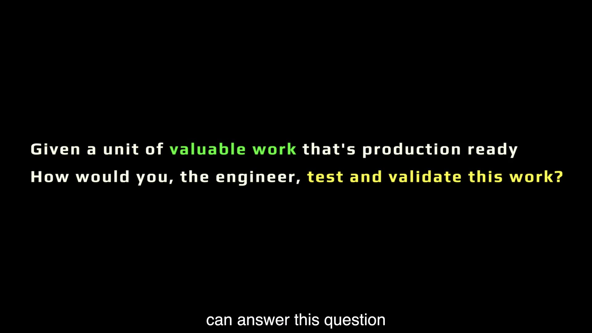
At 1:37 the question appears: given production-ready valuable work, how would the engineer test and validate it? At 1:50 Dan supplies the operational clause: answer it for every class of work the codebase handles, then encode those answers as commands or tool calls. The question converts tacit judgment into an interface an agent can use.
This is also where architecture becomes leverage. A codebase with clear seams, deterministic setup, fast commands, and observable outputs is easier for an agent to validate. A net-new codebase can install those properties early. An existing codebase can still move toward them, but the missing commands are architectural work—not a prompting failure.
4 · Name it — Dan’s term
The core validation question
In plain language: what observable facts would make you willing to say this result works? “I would review it carefully” is not yet executable. “Run uv run pytest, build the client, reset the database, drive one precise query, and keep the screenshots” gives the system actions and evidence.
5 · Worked example — the TAC-5 validation menu
Translate one repository into proof-producing commands
| Work surface | Validator in TAC-5 | Failure class exposed | Evidence |
|---|---|---|---|
| Python source | cd app/server && uv run ruff check . | Unused imports, ordering, static-quality errors | Exit status and diagnostics |
| Backend behavior | cd app/server && uv run pytest | Business rules, security, file and API regressions | Collected test results |
| Python syntax | uv run python -m py_compile server.py | Malformed Python that other checks may not reach | Clean compilation |
| TypeScript source | cd app/client && bun tsc --noEmit | Type and module-contract errors | Compiler result |
| Production client | cd app/client && bun run build | Bundling and production-compilation failures | Successful build |
| User path | Playwright MCP + one deterministic query | UI, browser, network, rendering, and result mismatch | Before/after screenshots and seven rows |
No single row proves the whole experience. Together they answer the question at increasing distances from the source code.
6 · You try — five-minute artifact
Build the course repository’s class-of-work matrix
- Write four rows: backend logic, frontend behavior, cross-stack user path, and agentic-workflow result.
- For each row, copy one exact validator from the TAC-5 repository or its command templates.
- Name the expected evidence, not merely the command.
- Mark any row whose starting state must be reset before the check becomes meaningful.
- Circle the row that still depends on your manual attention. That is the next loop to encode.
Pass when another learner could run the matrix without asking what “check it” means.
7 · Common fail + fix
Failure: answering with intentions
Symptom: “We should test the backend and click through the UI.” The statement is correct and useless to an unattended workflow. It has no directory, command, starting state, exact expectation, or evidence destination.
Fix: force every answer into five fields: work class, setup state, executable action, precise expectation, retained evidence. If a check cannot be expressed yet, label it architecture work. Do not hide the gap behind a stronger prompt.
8 · Current practice
The menu widened; the question did not age
9 · Retrieval check
Close the section before revealing
1. Recite the core validation question.
Reveal answer
Given a unit of valuable work that is production ready, how would you, the engineer, test and validate this work?
2. What deliverable follows the answer?
Reveal answer
A per-work-class list of exact commands or tool calls, including starting state, expectation, and evidence.
3. Why is “open the browser and test it” incomplete?
Reveal answer
It traps the procedure in human attention and omits a deterministic state, exact actions, assertion, and retained evidence.
10 · Teach-back
Turn philosophy into an interface
Teach the core validation question in ninety seconds. Use the TAC-5 backend as your example and show the difference between “test the server” and a proof-producing command contract.
Pass if your listener can name the command, expected signal, and why architecture affects encodability.
Make feedback a rule of every prompt
The economics of tests change when agents execute them repeatedly. A validator is no longer a tax on one human run; it becomes reusable judgment inside every agent run.
1 · Hook — concrete failure
The prompt that quietly assigns you the last mile
You ask an agent to remove an endpoint. It edits three files and stops. Nothing in the prompt says how to check the import graph, whether the backend suite still passes, or whether the server compiles. The agent may have done exactly what was requested. You still volunteered to become the validator because the request ended before reality could answer.
This failure is deceptive because the output can look complete. Open-loop work rarely announces that validation was omitted; it simply transfers the obligation to a later human. The queue grows faster while confidence shrinks.
2 · Picture — the tactic card
“Always” means the prompt you are firing now
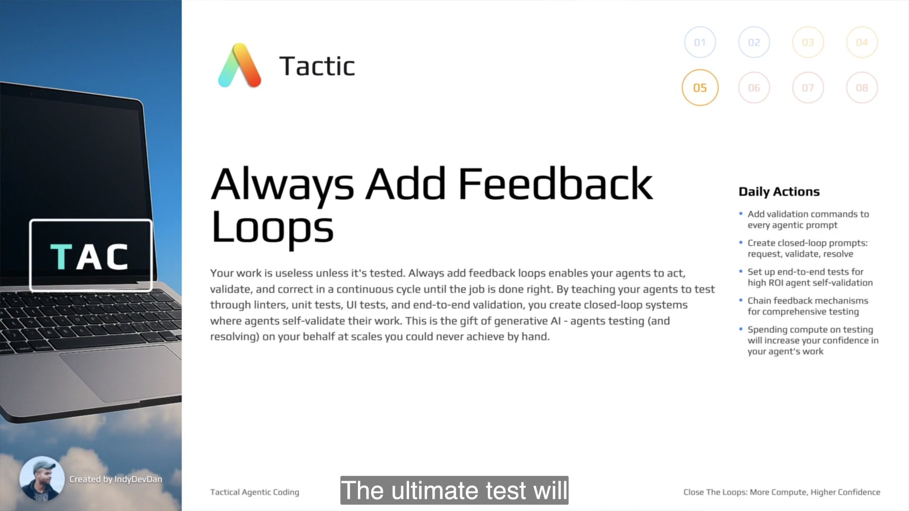
3 · Story — the testing arithmetic changes
One test now pays out across agent executions
Dan treats the familiar debate over how much testing is worth as settled by multiplication. In a human-only workflow, the value of a test is amortized over the times a person remembers to run it. In an agentic workflow, the same test can execute inside every prompt, template, and workflow node. As agent runs increase, the test keeps spending compute to protect standards without spending the engineer’s presence.
The claim is not that human review disappears. Dan explicitly says to hand off testing responsibility and teach agents to test, not to stop testing or reviewing. Users remain the ultimate test. The shift is that the next layer of checking can be performed by agents at a scale a person would never sustain manually.
4 · Name it — Tactic #5
Always Add Feedback Loops
This is a prompt-structure rule before it is a testing strategy. “Always” can be inspected immediately: does the request in your buffer contain validators and resolution instructions? If not, the loop is open.
5 · Worked example — measure the leverage
Feedback moves all four agentic KPIs
Failures are repaired before a human must re-prompt.
Larger units can be delegated when proof travels with them.
More runs finish correctly on the first human request.
The system checks routine evidence without continuous supervision.
Consider the endpoint-removal prompt. Adding ruff, pytest, and py_compile raises compute usage. It also gives the agent three opportunities to discover and resolve errors before the engineer returns. The useful unit is not tokens saved; it is confidence gained per unit of scarce human attention.
6 · You try — two-minute prompt audit
Find the missing loop before firing
- Open any TAC-5 task prompt you are about to use.
- Underline the request.
- Box every command or tool call that can falsify success.
- Circle the instruction that tells the agent what to do with a red result.
- If either box or circle is missing, add it before execution.
Pass when the prompt could produce evidence and react to it without another human message.
7 · Common fail + fix
Failure: treating feedback as a future initiative
Someday testing: the team agrees tests are important, then fires unvalidated prompts all week. Human-era ROI: the team says the suite is too expensive because it imagines one engineer running it once, ignoring the many agent executions it could protect. Review withdrawal: the team misreads delegation as permission to accept a green report blindly.
Fix: make validation a firing condition. No request leaves the buffer without its relevant checks. Keep the human review gate, but move routine evidence collection earlier and into the agent’s loop.
8 · Current practice
Prompts teach judgment; hooks can enforce rails
9 · Retrieval check
Retrieve the tactic, not the slogan
1. Why does agent execution change the ROI of tests?
Reveal answer
The same encoded test can run across many agent executions, multiplying its protective value while reducing repeated human presence.
2. What two ideas does the tactic not imply?
Reveal answer
It does not mean humans stop testing or reviewing, and it does not mean validation can be postponed to a future testing initiative.
3. What is the immediate inspection test?
Reveal answer
The prompt about to be fired contains relevant validators and an instruction to resolve failures.
10 · Teach-back
Explain why more compute can mean less presence
Teach Tactic #5 with one KPI. Explain how adding three validators to a prompt can increase compute while reducing attempts or presence.
Pass if you preserve human review and distinguish today’s prompt rule from a someday test plan.
Separate three loop positions
In-loop, out-loop, and closing the loop differ by more than one preposition. One locates the human, one locates the workflow, and one describes the feedback cycle inside the work.
1 · Hook — concrete failure
The unattended agent with no way to know it is wrong
A team celebrates that a feature agent now runs on another machine. Nobody watches it. The prompt requests a change, the agent edits, commits, and opens a pull request. There are no validation commands inside the work. The team has moved the human out of the loop without closing any feedback loop. It has not created trusted autonomy; it has created unsupervised risk.
The inverse failure is subtler. A team perfects in-loop validators while a person still launches every command, moves every artifact, and waits for every run. The feedback is good, but the presence KPI never moves. The terms need separate names so each architecture gap stays visible.
2 · Picture — three different boundaries
Locate the human, the workflow, and the micro-cycle
In-loop
You sit at the device and trade prompts with the agent. Useful for learning, presenting, exploring, and correcting new loops.
human ↔ agent ↔ toolsOut-loop
A high-level prompt runs through PITER on an isolated environment. You return to issue evidence and a pull request.
issue → trigger → environment → reviewClosing the loop
Inside either location, the agent calls a validator, observes the result, repairs failure, and repeats until positive or bounded failure.
action → feedback → resolution ↻3 · Story — the lesson performs all three
A GitHub issue starts working while Dan teaches
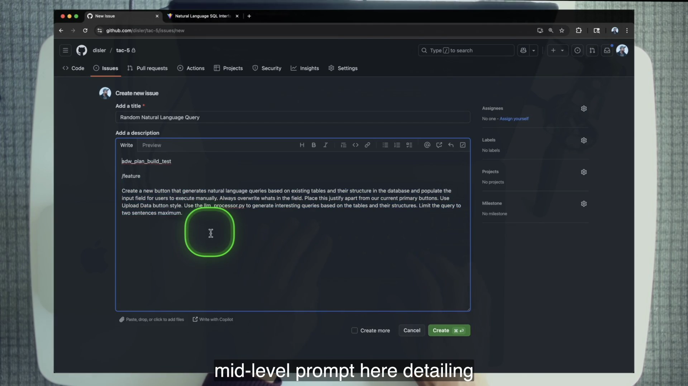
adw_plan_build_test, /feature, and a bounded request for a Generate Random Query button.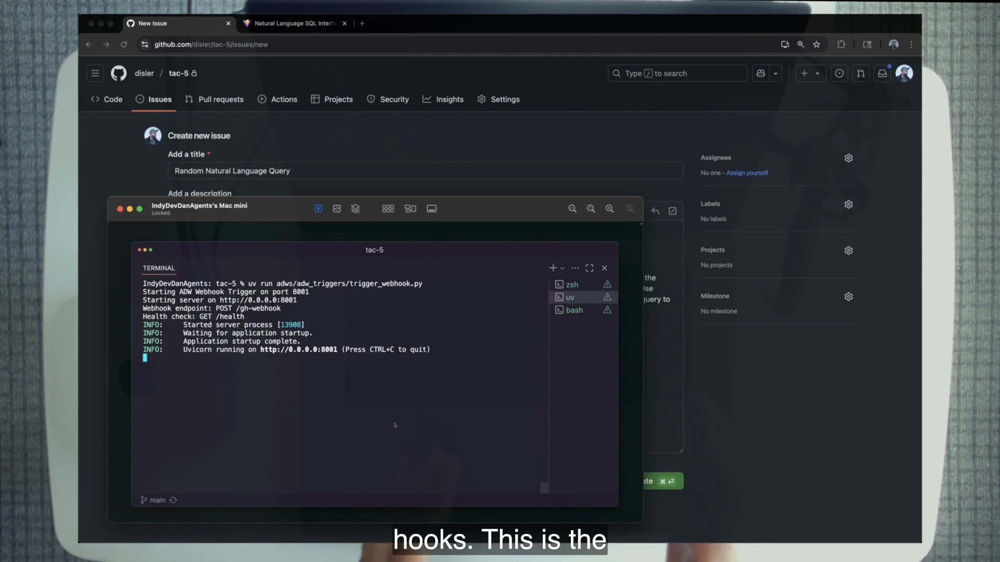
At 10:13 Dan starts the out-loop plan→build→test run. He then spends roughly thirty minutes in-loop demonstrating the smaller closed-loop primitives from which that pipeline is built. At 46:32 he returns to a pull request. One lesson can therefore contain all three positions: the teacher is in-loop, the pipeline is out-loop, and each validator inside either workflow closes a micro-loop.
The distinction is causal. The out-loop pipeline is trustworthy only to the degree that its internal loops have already been observed and corrected in-loop. Moving execution off-device does not create feedback; it merely changes where the absence of feedback can hurt you.
4 · Name it — canonical definitions
In-loop · out-loop · closing the loop
PITER comes from TAC-4: Prompt input, Trigger, Environment, Review. It describes the perimeter around out-loop work. A closed loop describes the action-feedback-resolution mechanism inside a step. You can install either without the other; TAC-5 teaches why you eventually need both.
5 · Worked example — trace issue #28
Classify each event by loop position
- Prompt input: the issue requests a random-query button and names the plan/build/test workflow.
- Trigger: the GitHub webhook reaches
trigger_webhook.pyon the agent machine. - Out-loop execution: separate plan, build, and test nodes operate while Dan returns to an interactive lesson.
- Closed loops: the test node runs unit and e2e checks, passes failures to resolver agents, and reruns within fixed bounds.
- Review: the issue summary and PR return the result to the human—the final test on top of the tests.
The middle three steps are often collapsed into “the agent ran.” Keeping them separate tells you where to debug: bad request, absent trigger, unsafe environment, weak validator, unbounded resolver, or poor review evidence.
6 · You try — classification drill
Label eight events without using “autonomous”
For each event, write in-loop, out-loop, or closed-loop mechanism: chatting after ruff fails; a webhook starting a script; a fresh resolver receiving a failing command; you inspecting a PR; Playwright reading an after screenshot; a cron process polling issues; you manually copying test output into a second prompt; an agent rerunning all checks after a repair.
Answers: in-loop; out-loop trigger; closed-loop; out-loop review; closed-loop; out-loop trigger; in-loop but open at the agent level; closed-loop. Explain every answer by who moves information and who performs the feedback cycle.
7 · Common fail + fix
Failure: scaling location before scaling feedback
Out-loop first: a webhook and dedicated machine amplify unverified changes. In-loop forever: every validator works, but the person remains scheduler and courier. Terminology blur: “closed loop” is used as a synonym for “runs without me,” hiding the absence of self-correction.
Fix: prove the micro-loop in-loop, preserve the exact validator and resolution contract in a reusable asset, then move the asset into the out-loop perimeter. Review the first runs heavily and improve the loop before expanding scope.
8 · Current practice
The environment may be rented; the distinction remains yours
9 · Retrieval check
Separate the terms under pressure
1. Can a workflow be out-loop and still open-loop?
Reveal answer
Yes. It can run off-device without any validator-feedback-resolution cycle, which is unattended but not self-correcting.
2. What does PITER describe that a closed loop does not?
Reveal answer
The out-loop perimeter: prompt input, trigger, environment, and review.
3. Why learn loops in-loop first?
Reveal answer
You can observe feedback, correct validators and resolution behavior, and earn evidence before unattended execution amplifies the design.
10 · Teach-back
Draw three loops on one page
Teach the three terms using issue #28. Point to the human, the webhook pipeline, and one validator-resolver cycle. End by explaining why “out-loop” is not a synonym for “safe.”
Pass if your listener can imagine one out-loop/open-loop counterexample.
Write Request → Validate → Resolve
A closed-loop prompt does not need to be grand. The first one is three lines long, deliberately introduces a defect, and contains the mechanism that catches it.
1 · Hook — concrete failure
The “simple change” exemption
Small edits are where feedback disappears first. Comment one line, rename one import, move one call—surely review can wait. But a one-line change can leave a dangling import, violate ordering rules, disable a security check, or break a test far from the edited file. “Simple” describes typing effort, not the size of the reachable behavior.
TAC-5 kills the exemption with a prompt so small that validation cannot plausibly be called overhead. The prompt asks for sabotage, runs one linter, and requires resolution. The loop is almost embarrassingly ordinary. That is its strength.
2 · Picture — the minimum viable cycle
Three parts, one repeating contract
Change sql_processor.py: comment out validation.
Run uv run ruff check . from the server.
If any errors appear, fix them and validate again.
3 · Story — stdout becomes work context
Watch the smallest loop close
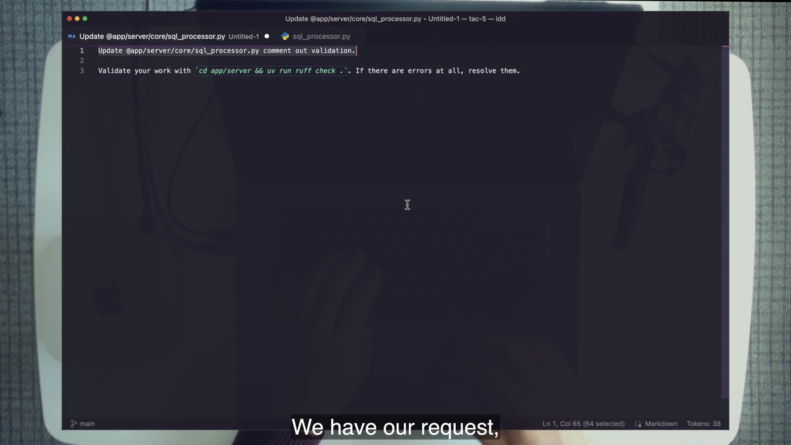
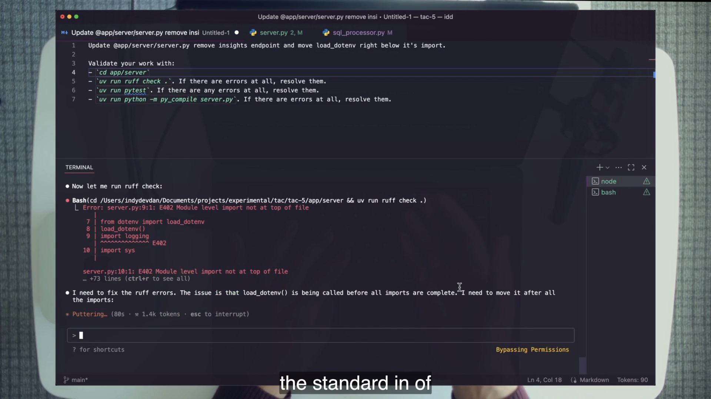
In the first demo, commenting out validate_sql_query(sql_query) leaves its import unused. Ruff reports the error. The agent receives that observation, removes the dangling problem, and runs the check again. The intelligence is useful, but the loop depends on plumbing: without a validator call, no diagnostic enters the work and no correction is demanded.
The second frame is course-era UI, including the “Bypassing Permissions” banner. Treat that surface as period detail. The durable story is command → diagnostic → agent decision → changed file → rerun.
4 · Name it — anatomy
Closed-loop prompt
The request may be a one-line mutation or a large feature specification. The anatomy stays stable. “Resolve” is not “make the command green by any means”; later sections add the rule of law and evidence constraints that prevent cheating.
5 · Worked example — scale from one to three
Endpoint removal with an ordered validation stack
REQUEST
Remove the /api/insights endpoint from @app/server/server.py.
Move load_dotenv() directly below its import.
VALIDATE — run in this order
1. cd app/server && uv run ruff check .
2. cd app/server && uv run pytest
3. cd app/server && uv run python -m py_compile server.py
RESOLVE
On any error, stop and resolve it. Then rerun every validation
step from the top; a repair may have broken an earlier check.Ruff catches import ordering. Pytest detects behavior. Pycompile seals syntax. Ordering matters because later repairs can invalidate earlier success. A loop closes only after a complete green sweep, not when the first visible error disappears.
6 · You try — write before you run
Produce a 30-token closed-loop prompt
- Choose one reversible TAC-5 mutation.
- Write one sentence for the request.
- Add the narrowest real repository command that can falsify it.
- Add: resolve every error, rerun the validator, and report the evidence.
- Label the three parts, then remove the labels and confirm the structure is still obvious.
Do not execute until a partner can identify all three parts without explanation.
7 · Common fail + fix
Failure: one repair, one partial rerun
Symptom: Ruff fails, the agent fixes an import, then resumes at pytest. The repair accidentally introduces another lint error. The prompt reports the later checks green while the full stack is red. Another symptom: the validate block says “run tests” without directory or command, so different agents choose different evidence.
Fix: order the checks, stop on a failure where appropriate, resolve immediately, and restart the sweep from the top. Pin the directory and command. Require the final report to name what ran and what passed.
8 · Current practice
Keep judgment visible; mechanize non-negotiables
9 · Retrieval check
Reconstruct the smallest loop
1. Name the three parts in order.
Reveal answer
Request, Validate, Resolve.
2. What catches the first demo’s sabotage?
Reveal answer
Ruff reports the unused import left after validate_sql_query(sql_query) is commented out.
3. Why rerun every validator after a repair?
Reveal answer
The repair can break a check that already passed; only a fresh full sweep establishes the combined state.
10 · Teach-back
Teach the loop without mentioning model quality
Explain why the first prompt self-corrects. Your explanation must include the file mutation, Ruff’s observation, how that observation reaches the work, and the rerun.
Pass if the mechanism still makes sense with a different capable agent.
Stack confidence across failure classes
A linter can be perfectly green while the business rule is broken. Confidence rises when each validator sees a class of failure the others structurally cannot.
1 · Hook — concrete failure
The forgotten sabotage that a fresh agent repairs
Demo one comments out SQL validation. Then the context is cleared. A new agent receives a different endpoint-and-import request. It has no conversational memory of the sabotage. If correctness depended on memory, the defect would survive. Pytest catches it instead. The validator, not the chat history, carries the standard across agents.
This is the proof moment for fresh contexts. Clearing memory makes the result stronger, not weaker: it removes the possibility that the agent repaired the defect because it remembered creating it.
2 · Picture — six layers, six kinds of evidence
Build a confidence stack, not a pile of duplicates
Ruff
Static quality and import rules.
ruff check .Pytest
Backend behavior and regression rules.
pytestPycompile
Python syntax compilation.
python -m py_compileTypeScript
Frontend types and contracts.
bun tsc --noEmitBuild
Production bundling.
bun run buildPlaywright
End-user path and precise result.
browser evidence3 · Story — standards survive the context window
Pytest restores the security call
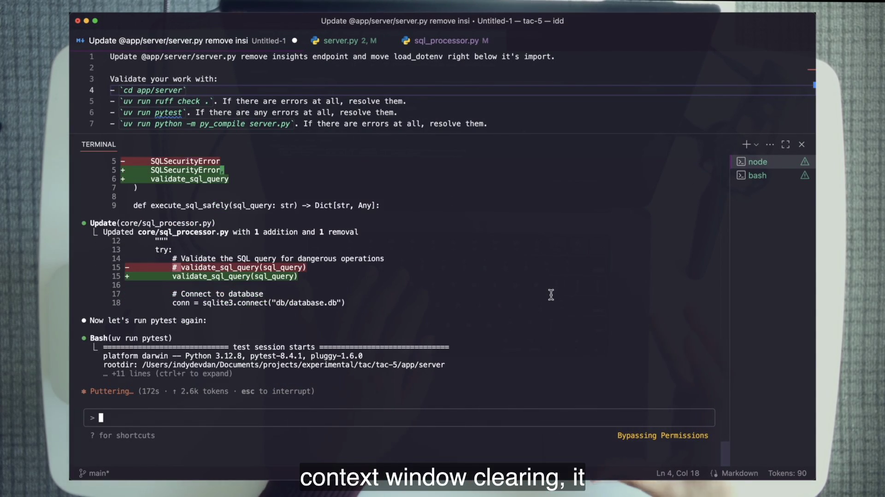
validate_sql_query(sql_query) and the associated import, then runs pytest again. The test suite—not memory—preserves the rule.Ruff first catches the load-dotenv ordering mistake. During repair the agent briefly creates duplicate imports; it reruns and corrects them. Pytest then reaches the older sabotage, restores the validation call, and reruns. Pycompile checks that the final server module compiles. The imperfections are instructive: a loop need not avoid every wrong move; it must expose and correct wrong moves before claiming completion.
By 25:20 the lesson counts six buckets. “Pytest” represents many tests but one feedback class in the stack. The browser check sits furthest from source and closest to the user. Confidence is the combined coverage, not the prestige of one tool.
4 · Name it — rule and metaphor
Stacking the confidence · tests as the rule of law
Tests are not infallible. “Rule of law” describes how disagreement is handled. A red test is evidence requiring diagnosis. Deleting it, weakening it, or skipping it merely to produce green destroys the meaning of every future run.
5 · Worked example — one defect, several blind spots
Ask what each layer cannot see
| State | Could pass | Check that exposes it |
|---|---|---|
| Security validation call commented out; import cleaned up | Ruff and pycompile | Behavioral pytest |
| Python backend green; TypeScript call shape wrong | All backend checks | bun tsc --noEmit |
| Types green; Vite production bundle broken | Type check | bun run build |
| Both projects compile; Query button fails at runtime | Lint, unit, type, build | Playwright e2e |
| Seven-row assertion run against polluted state | Commands may all execute | Database reset plus precise e2e expectation |
The stack is ordered partly by cost and partly by dependency. Fast failures should surface early. Expensive browser evidence should run only when cheaper foundations are green.
6 · You try — coverage map
Defend every validator’s place
- Write the six validators in order from memory.
- Beside each, name one defect it can expose that the previous layer cannot.
- Cross out any explanation that merely says “more confidence.” Replace it with a failure class.
- Mark the checks that require a particular starting state.
- Explain why e2e belongs after green unit checks in
adw_test.py.
7 · Common fail + fix
Failure: green by negotiation
Single-validator confidence: Ruff is green, so the feature is declared safe. Red-test bargaining: the agent deletes the assertion or adds a skip. Expensive-first ordering: the browser run burns time before syntax or unit failure is known. Memory dependence: validation instructions assume the current chat remembers prior defects.
Fix: map disjoint failure classes, protect test intent, order cheap prerequisites before expensive paths, and use /clear to prove that standards live in repository evidence rather than conversation.
8 · Current practice
Enforcement is stronger; the law still needs a legislature
9 · Retrieval check
Retrieve the proof moment
1. Name the six validation buckets in order.
Reveal answer
Ruff, pytest, Python py_compile, TypeScript no-emit check, frontend production build, Playwright end-to-end.
2. Why did /clear strengthen the sabotage demonstration?
Reveal answer
The fresh agent had no memory of the sabotage; the test suite alone carried the standard and exposed the defect.
3. What happens when a test is genuinely wrong?
Reveal answer
Diagnose and correct the test visibly, preserving review of the rule change; never silently route around red.
10 · Teach-back
Defend the stack to a skeptic
A colleague says, “If pytest passes, the browser test is redundant.” Use one TAC-5 failure class to rebut them, then state the rule of law and its wrong-test corollary.
Pass if your argument is about distinct observability, not “more tests are always better.”
Turn the browser into a validator
The manual ritual dismissed at minute three returns at minute twenty as a tool call: open the app, take a before image, perform the user action, take an after image, and judge a precise result.
1 · Hook — concrete failure
Everything compiles; the button still does nothing
Static checks can prove imports, types, syntax, tests, and builds while missing the path a user actually takes. The client may render a button whose event handler never reaches the server. The server may return data the interface fails to display. The right rows may exist while the loading state makes the input unusable. A stack that stops before the browser can certify code and miss experience.
The old answer was human click-through. It is valuable because it crosses layers. It is expensive because a person must repeat it. Browser control converts that tacit multi-step check into an executable specification with retained evidence.
2 · Picture — an evidence-producing user path
State → action → result → judgment
Reset
Restore the known SQLite database.
Before
Open localhost and save a screenshot.
Act
Enter the exact natural-language query and click Query.
After
Save a second screenshot with the results.
Judge
Read both images and confirm exactly seven rows.
3 · Story — the full validation prompt
The toy loop scales into a reusable codebase asset
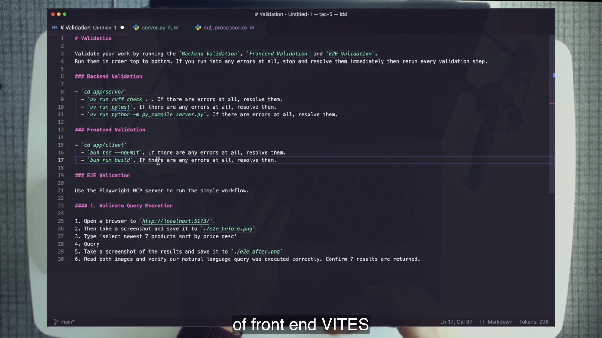
Playwright MCP opens localhost:5173, writes e2e_before.png, enters “select newest 7 products sort by price desc,” clicks Query, writes e2e_after.png, and lets the agent read both images. The agent confirms seven returned rows. Dan then performs the ultimate spot-check: he copies the generated SQL from the evidence into the live app and sees the identical result.
The before image reveals a second issue: junk tables such as test and data___DROP_TABLE_users___. The test system is polluting the live SQLite database. That discovery becomes input to the later /bug planning demonstration. One well-instrumented e2e loop can validate the intended path and expose a side effect outside the original request.
4 · Name it — end-to-end
Precise behavior from a known state
“The page looked right” is not a precise result. “After a database reset, this exact query produces exactly seven displayed rows, with before and after screenshots retained” is. The assertion is only as trustworthy as its starting state.
5 · Worked example — make seven meaningful
Determinism is part of the assertion
- From the repository root, run
sh scripts/reset_db.sh. This is setup, not a seventh validator. - Run the backend and frontend checks so the browser does not inherit a cheaper known failure.
- Ask Playwright to open the app with the course’s isolated, headless 1920×1080 configuration.
- Capture the blank/ready state before acting.
- Use the exact natural-language query from the reusable prompt.
- Capture the result state, read both images, and count seven rows.
- Keep the filenames in the report so another reviewer can inspect the same evidence.
If the reset is skipped, seven might be accidental. If the screenshots are not retained, the agent’s judgment cannot be audited. If the expectation is vague, a tool can complete every action without proving the experience.
6 · You try — evidence critique
Find the missing contract field
Critique each e2e instruction: “make sure search works”; “open the page and screenshot it”; “run the seven-product query”; “confirm seven results against whatever database is running”; “reset, act, screenshot after, report pass.” For each, name the missing state, action, expectation, or evidence.
Then rewrite one into the course shape: known database, exact URL, exact input, exact interaction, before/after artifacts, exact row count, and resolution instruction.
7 · Common fail + fix
Failure: nondeterministic confidence theater
Unknown state: the database still contains pollution from a previous pytest run. Action without assertion: screenshots exist, but nobody reads them. Tiny-app dismissal: because the demo offers few actions, the team assumes the pattern will not scale. Artifact loss: the report says passed while evidence is overwritten or stored nowhere.
Fix: reset first, specify one precise behavior, retain artifacts under the run identity, and scale by composing more focused specs—not by making one enormous ambiguous browser script.
8 · Current practice
Playwright remains one strong route, not the only route
9 · Retrieval check
Reconstruct the six browser steps
1. What exact query does the reusable prompt use?
Reveal answer
select newest 7 products sort by price desc.
2. What artifacts make the judgment reviewable?
Reveal answer
e2e_before.png and e2e_after.png, read by the agent and retained for a reviewer.
3. What makes “seven” trustworthy?
Reveal answer
scripts/reset_db.sh restores a known database state immediately before the validation sweep.
10 · Teach-back
Teach why a screenshot is not yet a test
Explain the browser loop to someone who already uses Playwright. Emphasize the database reset, exact query, before/after evidence, and precise row assertion.
Pass if your listener can identify why an unreset database invalidates the result.
Template validation by default
“Always” is fragile when it depends on memory. Put validation into the prompts that generate plans so every future bug, feature, and chore inherits the codebase’s evidence rules.
1 · Hook — concrete failure
The disciplined engineer on an undisciplined Tuesday
On Monday you remember to add pytest, TypeScript, build, reproduction commands, and a UI test. On Tuesday the issue queue is loud, so the prompt says only “fix the bug.” The result is not a different engineering philosophy; it is a different level of care produced by available attention. A practice that disappears under load is not yet a system.
The course removes “remember validation” from the human checklist. It encodes validation in /bug, /feature, and related planning templates. Those templates create plans whose last step is proof.
2 · Picture — three altitudes of the same loop
Prompt, generated plan, workflow node
Single request
A scratch prompt carries request, commands, and resolution. Best for learning the primitive.
Meta prompt
/bug or /feature creates a plan with validation commands and conditional e2e work.
ADW node
Deterministic code executes tests, dispatches resolvers, records evidence, and reports bounded success or failure.
3 · Story — the plan format carries the law
Validation survives prompt generation
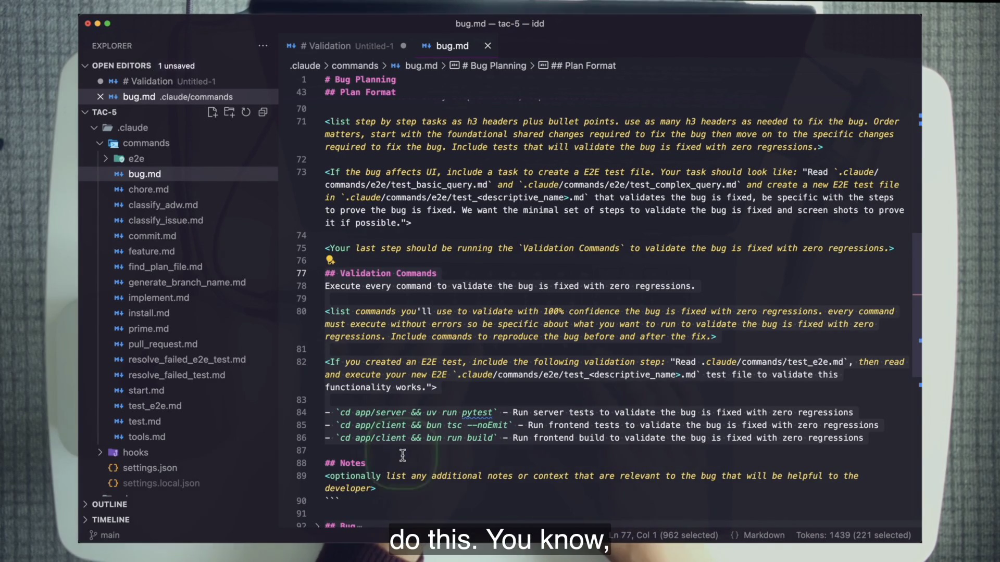
/bug meta prompt bakes ## Validation Commands into every generated plan and conditionally requires a new e2e spec for UI-affecting work.Dan runs /bug for the junk-table problem. The issue is backend-only: one integration test writes to the production SQLite connection instead of the isolated pattern used by other tests. The generated plan includes reproduction, root-cause analysis, targeted checks, and the standard backend/frontend validations. It correctly omits an e2e task because the bug does not affect the UI.
A second UI task—disable the query input while a query runs and add a debounce—does cross the user-interaction boundary. The template should therefore add a task to create a new .claude/commands/e2e/test_<name>.md specification. The conditional is as important as the defaults: always running e2e is wasteful; failing to require it for user-visible work leaves the strongest gap open.
4 · Name it — meta prompt
Templating our engineering
The generated plan is a durable boundary. A fresh implementer can read it without inheriting the planner’s conversation. The validation section carries standards across that context boundary just as pytest carried the SQL security rule across /clear.
5 · Worked example — use the real signature
Plan bug 111 without dropping the issue payload
/bug 111 adw111 '{"title":"Tests pollute production SQLite","body":"The malicious-filename integration test writes a junk table to app/server/db/database.db. Isolate that test using existing in-memory or temporary database patterns."}'The third argument matters: .claude/commands/bug.md declares issue_number, adw_id, and issue_json. A two-argument reproduction is incomplete. After generation, audit the plan before implementation:
## Validation Commandsexists.- Reproduce-before and reproduce-after commands list SQLite tables, not
git status;database.dbis ignored. - The targeted test is
tests/test_sql_injection.py::test_integration_upload_malicious_filename. - The expected post-fix table invariant is exactly
products,users. - No e2e task appears because the defect is test isolation, not user interaction.
6 · You try — audit the conditional
Grade two plans before any agent implements them
Generate one backend-only plan and one UI-affecting plan in the TAC-5 copy. For each, underline the validation block, the reproduction commands, and the final full sweep. Then inspect the UI plan for the required new e2e-file task and the backend plan for its correct omission.
Pass when you can say not only “the template included tests,” but “the conditional matched the work surface and the evidence would falsify this exact bug.”
7 · Common fail + fix
Failure: a template that is trusted but not audited
Manual repetition: validators are copied by hand into every task and slowly drift. Rubber stamp: a UI plan omits e2e, but the engineer assumes the template must know best. Wrong oracle: a plan uses git status to check an ignored database. Context pollution: plan and implementation share a long session, masking what the plan actually carries.
Fix: centralize defaults, keep conditionals explicit, audit every generated plan against the work surface, use repository-real oracles, and start implementers fresh with the plan artifact as their input.
8 · Current practice
Reusable prompts now have first-class packaging
9 · Retrieval check
Retrieve the guarantee and the condition
1. What does /bug guarantee in every generated plan?
Reveal answer
A ## Validation Commands section with reproduction-specific checks and the default pytest, TypeScript, and build validations.
2. When is a new e2e specification required?
Reveal answer
When the bug affects the UI or user interactions.
3. What arguments does the real /bug template require?
Reveal answer
Issue number, ADW ID, and an issue JSON payload containing the title and body.
10 · Teach-back
Explain how “always” survives Tuesday
Teach the chain from /bug to generated plan to fresh /implement agent. Include the backend/UI conditional and the junk-table oracle correction.
Pass if your listener can explain why git status is the wrong evidence for an ignored database.
Isolate testing as an ADW node
The test step becomes a reusable machine: deterministic code owns sequencing, gates, retries, and exit status; fresh agents own diagnosis and repair inside those boundaries.
1 · Hook — concrete failure
The build agent that tests until the context turns to soup
One agent plans, implements, runs every test, diagnoses every failure, repairs the code, reruns the browser, writes the summary, commits, and opens the pull request. The design feels simple because it has one entry point. Internally it mixes incompatible responsibilities, accumulates context, and gives deterministic control to a stochastic conversation. When the fifth test fails, nobody knows which prior assumption polluted the repair.
TAC-5 takes the opposite approach. Testing is its own SDLC node, independently invokable and independently improvable. Each failure can receive a fresh resolver context. Ordinary Python code decides how many times the loop may run and when it must stop honestly.
2 · Picture — code decides, agents judge
A deterministic shell around agentic resolution
Inputs
Issue, branch state, ADW ID, command templates, and repository paths.
issue → state → promptsDeterministic controller
- Run test contract
- Parse results
- Dispatch fresh resolvers
- Count rounds
- Gate e2e
- Summarize and exit
Agent judgment
Interpret one failure, reproduce with its command, make the smallest repair, and return evidence.
failure → diagnosis → fix3 · Story — the loop becomes code
The 1,106-line test node exposes its control boundary
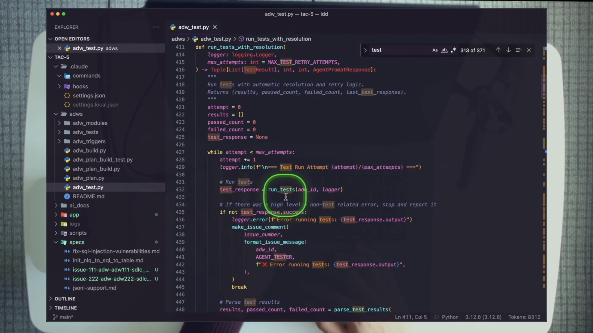
run_tests_with_resolution makes the split visible: Python counts attempts and calls the test runner; fresh agents handle individual failing results.The controller asks /test to execute the five command checks and return only a JSON array. Each record carries test_name, passed, execution_command, test_purpose, and optional error. Failures sort first. Each failure is handed to a fresh /resolve_failed_test agent, which must reproduce the problem using the supplied command before making a minimal fix.
The unit loop runs at most four rounds and stops early if a round resolves nothing. End-to-end begins only when unit checks are green and --skip-e2e is absent. E2e specs run one file at a time; the controller stops at the first failure, gives it to /resolve_failed_e2e_test, and permits at most two rounds. Finally the node posts a test summary, attempts the repository’s commit/PR path when there are tracked changes, and exits nonzero if failures remain.
4 · Name it — isolated node
AI Developer Workflow
Isolation is not duplication. adw_plan_build_test.py composes the plan, build, and test scripts while sharing one ADW ID and state file. Each node can still be called or improved separately.
5 · Worked example — walk the exact state machine
Unit gate before browser cost
- Fetch the issue and prepare the state branch.
- Run
/test; parse its machine-readable array. - For each failed record, create a resolver agent named by attempt and index.
- Give that agent the exact
execution_commandand purpose. - Rerun the test contract; repeat up to four rounds, but stop if nothing was resolved.
- If unit checks remain red, do not start e2e.
- If green and not skipped, glob
.claude/commands/e2e/*.mdfrom the repository root. - Run specs until the first failure, resolve it, and retry up to two rounds.
- Post the 📊 summary and retain per-agent prompts and raw output.
- Return an honest exit code.
Run the script from the TAC-5 repository root as uv run adws/adw_test.py <issue-number>. Running from adws/ breaks root-relative commands and makes the e2e glob find zero specs. The repository README shape is not a substitute for reading path-sensitive code.
6 · You try — paper execution
Trace a mixed failure without spending tokens
Suppose /test returns one lint failure and one frontend-build failure. Round one fixes lint but not build. Round two resolves nothing. Draw every controller decision. Does e2e run? How many resolver agents were created? What does the final exit status communicate?
Answer: the controller runs unit resolution, stops after the second round because nothing was resolved, never starts e2e because unit checks are not green, posts the remaining failure, and exits nonzero. Resolver count depends on returned failures per round, but each dispatch is fresh and separately named.
7 · Common fail + fix
Failure: unbounded “self-healing”
One giant agent: context and duties blur. Unlimited retries: an infrastructure error burns tokens forever. E2e before unit green: expensive evidence runs on a known-broken foundation. Current-directory drift: the script silently finds no specs. PR promise on a clean node: testing creates only ignored artifacts, so there may be no tracked commit to open a PR from.
Fix: isolate the node, bound it at four and two, stop when no progress occurs, gate expensive checks, run from the repository root, and grade a standalone clean test run on evidence—not on a guaranteed commit or pull request.
8 · Current practice
The JSON-you-hope-parses has a typed successor
9 · Retrieval check
Rebuild the controller from memory
1. What are the unit and e2e retry bounds?
Reveal answer
At most four unit-resolution rounds and two e2e-resolution rounds.
2. What gates e2e?
Reveal answer
All unit checks must be green, and --skip-e2e must not be set.
3. Why does each JSON result carry execution_command?
Reveal answer
A resolver can reproduce the exact failing check, and a human can rerun the same evidence without reconstructing it.
4. From which directory must the script run?
Reveal answer
The TAC-5 repository root, so root-relative test commands and the e2e glob resolve.
10 · Teach-back
Explain the control split with one failure
Teach how a failed frontend build moves through /test, JSON, one fresh resolver, a rerun, the unit gate, and eventual summary. Name every decision made by Python and every judgment made by the agent.
Pass if you include the 4/2 bounds and honest nonzero exit.
Adopt the agent’s perspective
An out-loop system earns trust when every verdict can be traced to the prompt, observation, agent, command, and artifact that produced it. “FAILED” is a starting point, not a diagnosis.
1 · Hook — concrete failure
The red status that triggers a blind rerun
The out-loop run returns “Overall Status: FAILED.” The feature appears in a pull request. Unit checks are green. Two of three end-to-end specs pass. A third reports a Claude Code error. An impatient operator clicks rerun and hopes the second attempt goes green. If it does, the system learns nothing. If it fails again, the team still knows nothing.
A trustworthy loop must fail loudly and leave enough state to explain itself. Otherwise green is equally untrustworthy: there is no way to know what actually ran, what an agent saw, or why it claimed success.
2 · Picture — a trace, not a transcript
Follow one identity through four evidence layers
Issue feed
Prefixed progress and summary comments.
{adw_id}_{agent}Agent prompt
The exact request and failure payload.
prompts/*.txtRaw output
Tool events, model output, and infrastructure errors.
raw_output.jsonlReview artifact
Branch, commit, screenshots, and pull request.
PR + img/3 · Story — diagnose the demo failure
Ninety seconds from red summary to infrastructure verdict
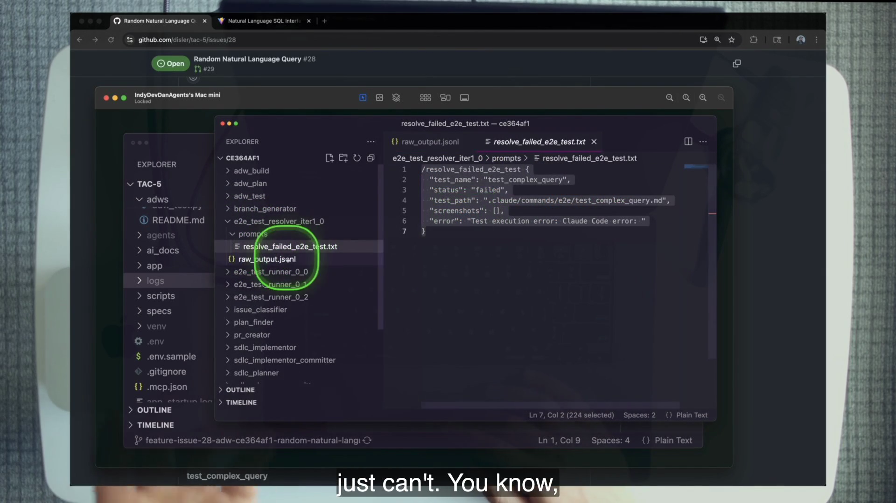
The issue summary says unit checks passed and e2e finished two of three. The failed spec is test_complex_query. Dan copies ADW ID ce364af1 from the run and opens agents/ce364af1/e2e_test_resolver_iter1_0/. The saved prompt shows exactly what the resolver was asked to fix. Its raw output shows an Anthropic API error 500: an infrastructure overload, not a product assertion failure.
The resolver cannot repair a provider outage. The bounded loop reports failure honestly. Dan then reviews the application on the agent machine; the new feature works, including a complex query and correct rows. The human notices a loading-state nit that can become a future test. Human judgment returns at the end, informed by system evidence.
4 · Name it — observability and tracing
Know what was inside every agent
The goal is not to save everything forever. It is to preserve enough causal evidence that a reviewer can distinguish product failure, test failure, environment failure, provider failure, and controller failure without interrogating a vanished context window.
5 · Worked example — the diagnosis worksheet
Move from surface verdict to owning layer
| Question | Artifact | Demo answer |
|---|---|---|
| Which run and agent failed? | Issue comment prefix and summary | ce364af1, e2e complex-query path |
| What did the resolver receive? | prompts/resolve_failed_e2e_test.txt | Failed test_complex_query payload |
| What happened during execution? | raw_output.jsonl | Anthropic API error 500 |
| Was the product behavior actually absent? | Running app and PR review | Feature produced a complex query and rows |
| What should change? | Judgment from evidence | Do not patch product code for provider overload; retain honest failure |
A rerun may be reasonable after the diagnosis. It is not a substitute for diagnosis. The evidence changes the action from “fix whatever is red” to “classify an external transient and preserve the verdict.”
6 · You try — local trace walk
Diagnose without asking the agent
- Choose one course-run ADW ID.
- Find every issue comment with that prefix.
- Open the matching agent directory and saved prompt.
- Read
raw_output.jsonlfor the decisive observation. - Classify the failure: product, test, environment, provider, or controller.
- Name the next action and the evidence that justifies it.
Pass when a second learner can reproduce your diagnosis from the same artifacts.
7 · Common fail + fix
Failure: punishing honest red
Blind rerun: intermittent green hides the cause. Product blame: every failed agent run becomes a code patch. Log hoarding: raw files exist but have no run identity or agent names. Status worship: a green summary is accepted without checking evidence. Silent catch: controller code swallows the error to protect the success rate.
Fix: prefix artifacts with run and agent identities, save input and output, classify before acting, reward accurate failure, and make the human review the test on top of the tests.
8 · Current practice
More agents make trace boundaries more valuable
9 · Retrieval check
Reconstruct the API-500 path
1. What was the demo ADW ID?
Reveal answer
ce364af1.
2. Which evidence established infrastructure failure?
Reveal answer
The resolver’s persisted raw output showed an Anthropic API error 500; the frame itself only shows the payload and agent tree.
3. Why is honest FAILED a successful system behavior?
Reveal answer
It accurately surfaces an unresolved condition, preserves the cause, and prevents false confidence when the loop cannot safely repair the failure.
10 · Teach-back
Defend a failed run
Teach a reviewer why the API-500 run should not be scored as a broken product fix. Walk issue → ADW ID → resolver prompt → raw output → live review.
Pass if you distinguish the screenshot’s visible evidence from the raw output’s 500 evidence.
Start with one loop, then move outward
The lesson’s end state is impressive: an issue becomes a planned, built, tested pull request on another machine. The prescribed starting point remains a three-line prompt you can understand completely.
1 · Hook — concrete failure
The webhook cathedral built before one validator works
An engineer sees the final pipeline and begins with tunnels, webhook signatures, branch orchestration, multiple agents, retry controllers, issue comments, and pull-request automation. The first real feature fails because the repository has no deterministic reset, the tests pollute production state, and the e2e assertion says only “check the page.” The architecture amplified loops that had never earned trust.
The opposite engineer writes one request–validate–resolve prompt, watches it fail, fixes the validator, reruns with a fresh context, turns the prompt into a template, and only then adds a dedicated environment. That path looks smaller because each step is legible. It reaches reliable out-loop work faster.
2 · Picture — the adoption gradient
Move complexity only after evidence
One prompt
Request, one validator, resolve.
Stack
Cover disjoint failure classes.
Template
Make validation the default.
ADW
Isolate, bound, trace, compose.
Human review
Judge evidence and improve the system.
3 · Story — request to review
The out-loop feature reaches a pull request
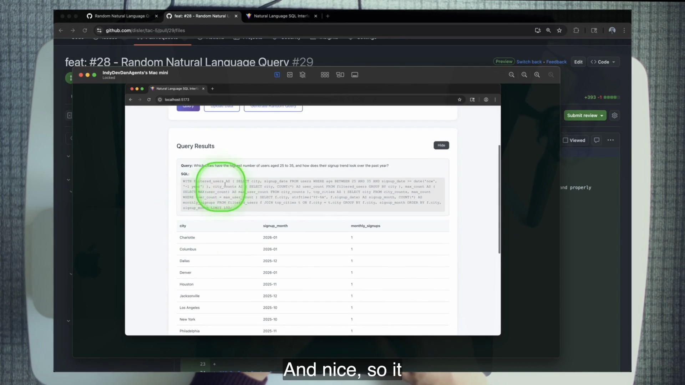
Issue #28 begins with a compact high-level request. The agentic layer classifies and plans it, builds the feature, authors or runs validation, records one honest e2e infrastructure failure, and presents PR #29. On the agent machine, Generate Random Query produces a complex CTE query and a results table. The feature exists as reviewable experience, not merely code.
Dan’s role in the middle was not to relay outputs. He designed and demonstrated the loops. His role returns at the end: review the evidence, inspect the running behavior, catch a loading-state nit, and turn that observation into the next validator. The human is the test on top of the tests and the designer of the next system improvement.
4 · Name it — the agentic layer
The system around the application
In TAC-5, the layer includes .claude/commands/, adws/, scripts/, and lifecycle hooks. It does not replace the application. It makes the codebase legible and operable to agents.
5 · Worked example — a four-week sequence inside TAC-5
Build trust without skipping the primitive
- First run: reproduce the three-line Ruff loop and inspect how feedback changes the agent’s next action.
- Next run: clear context and stack pytest and pycompile; prove standards survive chat memory.
- Next asset: preserve the full backend/frontend/e2e validation prompt.
- Next system: generate plans through
/bugand audit their validation conditionals. - Next node: inspect or run
adw_test.pywith bounded resolution from the repository root. - Next perimeter: connect the already-trusted node to a controlled issue/trigger/environment/review path.
- Every return: use review findings to improve the template, test, trace, or boundary that owns the failure class.
The time units are illustrative sequencing, not a schedule promise. The evidence gate matters: do not promote a loop because the calendar moved.
6 · You try — place the course system
Score each TAC-5 artifact on the gradient
Place these artifacts: the three-line scratch prompt, the reusable # Validation block, .claude/commands/bug.md, adws/adw_test.py, issue #28, agents/ce364af1/, and PR #29. For each, state what new trust property it adds and what human judgment remains.
Pass when “more autonomous” is replaced by concrete properties: reuse, context isolation, bounded retries, known environment, retained evidence, or review.
7 · Common fail + fix
Failure: copying the end state
Infrastructure first: the team automates launch before proof. Template first: a vague process is made reusable. Scale first: multiple agents repeat a bad validator faster. Human exit: review is removed because the automated stack is green. Artifact patch: the reviewer fixes one PR instead of improving the owning loop.
Fix: move one verified primitive outward at a time. Keep the reviewer on top. When review finds a repeatable gap, encode the correction where future runs inherit it.
8 · Current practice
Modern surfaces shorten setup, not learning
9 · Retrieval check
Retrieve the path and the human role
1. What is the prescribed adoption sequence?
Reveal answer
Single in-loop closed prompt → stacked validators → reusable/templated prompts → isolated ADW on a dedicated environment → human review on top.
2. What does the human do after routine validation moves into the system?
Reveal answer
Define constraints, review evidence and running behavior, classify failures, and improve the owning loop or template.
3. What remains for TAC-6?
Reveal answer
The review and document SDLC steps, extending the agentic layer toward operating more of the codebase.
10 · Teach-back
Tell the whole chapter as one gradient
In five minutes, move from the three-line Ruff prompt to PR #29. At every stage, name the new feedback, reuse, isolation, or trace property—and the human judgment that remains.
Expert pass: your listener can identify why a webhook is late in the sequence rather than the first implementation task.
Current practice · preserve the model, update the packaging
TAC-5’s mental model has aged well. The notable changes are how loops are packaged, enforced, contracted, and hosted—not why they exist.
Course-era explicit form
- Validation written inside prompt text
- Reusable slash-command templates
- “ONLY JSON” text contract
- Playwright MCP browser loop
- Mac mini + webhook environment
- Saved prompt and JSONL trails
Current packaging options
- Hooks for non-negotiable rails
- Agent Skills for discoverable reuse
- Schema-shaped structured outputs
- Broader browser/computer-use menu
- Managed actions and sandboxes
- Structured multi-agent event streams
Two bounded follow-ups
The extract approves exactly two current-practice videos. Both IDs and titles were rechecked against indexed video metadata during chapter build; no third overlay is added.
Current-practice overlay · Agent SkillsRAW Agentic Coding: ZERO to Agent SKILL
Use after the template section to see reusable prompt-and-code guidance packaged as a first-class skill.
Watch on YouTube → Current-practice overlay · engineering surfaceHow Claude Code CHANGED Engineering Forever (and what’s next)Use after the enforcement discussion for the broader programmable, hook-enabled agentic-engineering surface.
Watch on YouTube →What has not changed
- The core validation question and the requirement to encode its answers.
- Request → Validate → Resolve as the anatomy of self-correcting work.
- Tests as the rule of law, including visible correction of wrong tests.
- Stacking disjoint failure classes from source checks to user paths.
- Deterministic setup before precise browser assertions.
- Deterministic code owning bounds while agents own judgment.
- Fresh contexts, isolated nodes, stable return contracts, and traceable evidence.
- The adoption gradient: one in-loop prompt before an out-loop pipeline.
- The human as the final test and the designer of the next loop.
Graded lab · close the course codebase’s loops
Operate only inside a fresh TAC-5 repository copy. The grade comes from commands, retained evidence, repository-real invariants, and explanation—not from a confident agent report.
Lab 5.0 · Establish a known, owned environment
- Clone
https://github.com/disler/tac-5.gitinto a fresh directory and enter it. All remaining steps stay in this copy. - Verify
claude --version,uv --version,bun --version, and—only for the issue/PR extension—gh auth status. - Read
.claude/commands/install.mdbefore running/install. The command removes the existingoriginand initializes Git, so do not add your own remote first. - Run
/install. If you install manually instead, use the repository’s scripts and package files; do not improvise application changes. - After installation, create an empty GitHub repository you control, add it as
origin, and pushmainif you plan to run the issue/PR extension. Verifygit remote -vdoes not point at the course upstream. - Copy the root and server environment samples to their real environment files and add only the credentials required for the path you will run. The programmatic ADW path needs its provider key; the NL→SQL feature needs its configured model provider.
- Audit
.claude/settings.json. Record the three deny patterns—two force-push forms andrm -rf—and the five lifecycle events: PreToolUse, PostToolUse, Notification, Stop, and SubagentStop. - Read
.claude/commands/install.md,bug.md,implement.md,test.md, andtest_e2e.md. Mark which ones can mutate files, Git state, or external issue/PR state. - Start from a deterministic database:
sh scripts/reset_db.sh. Start the app withsh scripts/start.sh; stop stale processes first with the repository script if ports are occupied.
Checkpoint 0: without looking, state why
/install must precede adding your own origin, name the deny rules and five hook events, and explain which later drills need external credentials.Pass evidence
- Written permission/command audit.
- Remote points only to a repository you control, if configured.
- Database reset completed and the sample app renders.
- No application file edited by hand.
Lab 5.1 · Reproduce the minimum closed loop
In a scratch prompt buffer, fire the course artifact:
Update @app/server/core/sql_processor.py: comment out validation.
Validate with `cd app/server && uv run ruff check .`.
If there are errors at all, resolve them, rerun Ruff, and report the result.- Before firing, annotate Request, Validate, and Resolve on paper.
- Watch Ruff report the unused
validate_sql_queryimport after the call is commented out. - Do not edit. Let the agent resolve the diagnostic and rerun to green.
- Independently execute
cd app/server && uv run ruff check .. - Save the prompt, first red output, agent repair summary, and independent green output.
Checkpoint 1: explain the feedback channel in one sentence: a real command produces a diagnostic that becomes part of the agent’s working context and changes its next action.
Pass evidence
- Three-part prompt.
- Ruff F401 evidence for the dangling import.
- Agent—not human—repair.
- Independent final green Ruff run.
Lab 5.2 · Prove standards survive context
- Ensure the Drill 5.1 sabotage exists long enough for this test, then run
/clear. If the previous loop already fully restored the call, ask the agent to recreate only the course sabotage through a closed-loop setup prompt and clear immediately afterward. - With a fresh agent, request removal of
/api/insightsfrom@app/server/server.pyand moveload_dotenv()directly below its import. - Validate in order:
cd app/server && uv run ruff check .,uv run pytest, anduv run python -m py_compile server.py. - Require the agent to stop on every error, resolve it, and restart the full sequence.
- Observe Ruff’s import-order diagnostics and pytest’s detection of the older SQL-validation sabotage.
- Independently rerun the full three-command stack. Preserve the diff that restores
validate_sql_query(sql_query).
Checkpoint 2: write two sentences: why
/clear makes the result stronger, and why a validator—not a context window—should carry a repository standard.Pass evidence
- Proof that
/clearoccurred before the second task. - Ordered three-check prompt.
- Fresh-agent repair of the prior sabotage.
- Full green sweep after the final repair.
Lab 5.3 · Stack all six loops
- From the repository root, run
sh scripts/reset_db.shimmediately before this drill. Earlier pytest runs can pollute the live database, so setup from Lab 5.0 is no longer sufficient. - Run the backend stack: Ruff, pytest, and
python -m py_compile server.py. - Run the frontend stack:
cd app/client && bun tsc --noEmit, thenbun run build. - Through Playwright MCP, open
http://localhost:5173, savee2e_before.png, enterselect newest 7 products sort by price desc, click Query, and savee2e_after.png. - Require the agent to read both images and confirm exactly seven displayed results. If any validator fails, resolve and restart the sweep.
- Perform Dan’s human spot-check: inspect the after image and reproduce the generated query in the running app. Record whether the rows match.
Checkpoint 3: name six loops—not seven. The database reset establishes state; it is setup. Then explain why the exact count is meaningless without that setup.
Pass evidence
- Timestamped reset immediately before the sweep.
- Five command results plus browser result.
- Readable before/after screenshots.
- Seven-row assertion and independent human comparison.
Lab 5.4 · Core grade — fix a green test with a red side effect
The real course defect is narrow: tests/test_sql_injection.py::test_integration_upload_malicious_filename receives a test_db fixture but calls convert_csv_to_sqlite through the production connection. The test passes while adding a sanitized junk table to app/server/db/database.db. Because that database is ignored, git status cannot detect the side effect.
Phase A · Prove the pre-fix contradiction
sh scripts/reset_db.sh
sqlite3 app/server/db/database.db "SELECT group_concat(name, ',') FROM (SELECT name FROM sqlite_master WHERE type='table' ORDER BY name);"
cd app/server && uv run pytest tests/test_sql_injection.py::test_integration_upload_malicious_filename -q
sqlite3 db/database.db "SELECT group_concat(name, ',') FROM (SELECT name FROM sqlite_master WHERE type='table' ORDER BY name);"The first query must return products,users. The targeted pytest is expected to pass. The second query exposes the hidden failure by including data___DROP_TABLE_users____ alongside products,users. Save all three outputs. A green test and a red environment invariant can coexist.
Phase B · Generate and audit the plan
/bug 111 adw111 '{"title":"Tests pollute production SQLite","body":"The malicious-filename integration test passes but writes data___DROP_TABLE_users____ into app/server/db/database.db. Isolate this test using existing in-memory or temporary database patterns, with no application behavior change."}'- Open the generated
specs/issue-111-adw-adw111-sdlc_planner-*.md. - Reject the plan if it uses
git statusas the database oracle. - Require the exact table-list check before and after the targeted test.
- Require the diff to stay test-only and use an existing isolation pattern, such as the in-memory fixture behavior already present in
tests/core/test_file_processor.py. - Confirm the plan contains no e2e task: the defect is test isolation, not UI behavior.
- Run
/clear, then/implement <generated-plan-path>. Type no fix by hand.
Phase C · Close every relevant loop
sh scripts/reset_db.sh
cd app/server && uv run pytest tests/test_sql_injection.py::test_integration_upload_malicious_filename -q
sqlite3 db/database.db "SELECT group_concat(name, ',') FROM (SELECT name FROM sqlite_master WHERE type='table' ORDER BY name);"
uv run ruff check .
uv run pytestThe targeted test must remain green. The SQLite query must now return exactly products,users. Ruff and the full backend suite must pass. Grade the behavior invariant, not a magic diff shape; the implementation must remain minimal and test-scoped.
Checkpoint 4: explain why the original passing test was unsafe, why
git status lied by omission, and why the correct fix belongs in test isolation rather than production query logic.Pass evidence
- Pre-fix: targeted test green and table invariant red.
- Complete three-argument
/buginvocation. - Audited plan with correct oracle and no e2e task.
- Fresh implementer agent; no human code edit.
- Post-fix: targeted test green and exact
products,usersinvariant. - Final Ruff and full pytest green.
Lab 5.5 · Audit the bounded controller
- Read
.claude/commands/test.md. Copy its result fields and explain whyexecution_commandandtest_purposeboth matter. - Read
adws/adw_test.py. LocateMAX_TEST_RETRY_ATTEMPTS = 4andMAX_E2E_TEST_RETRY_ATTEMPTS = 2. - Trace the early stop when a resolution round fixes nothing, the e2e-on-green-unit gate, and the stop at the first e2e failure in a round.
- Find the issue summary path and per-agent artifact path. Confirm prompts and
raw_output.jsonlare retained beneathagents/{adw_id}/{agent}/. - Write the correct root invocation:
uv run adws/adw_test.py <issue-number>. Explain whycd adws && uv run adw_test.py …is wrong for this source: root-relative commands and the e2e glob no longer resolve. - Explain why a clean standalone test run cannot guarantee a commit or PR: test artifacts may be ignored, leaving no tracked change to commit.
Checkpoint 5: draw the controller with no notes: JSON unit contract → fresh resolvers ≤4 → unit gate → first failing e2e + resolver ≤2 → summary → honest exit.
Pass evidence
- Annotated source/control-flow map.
- Correct root invocation.
- Accurate 4/2 bounds and gate.
- Explanation of honest failure and non-guaranteed PR.
Lab 5.6 · Course-only stretches
- New e2e spec: through the agent, create
.claude/commands/e2e/test_hide_button.mdmodeled on the existing specs. Include User Story, Test Steps with**Verify**markers, Success Criteria, and retained screenshot expectations. Run it through the real/test_e2econtract. - Break a loop safely: through the agent, flip one assertion in
tests/core/test_sql_processor.pyon a scratch branch, then use the resolver prompt to reproduce, minimally repair, and rerun. Grade whether test intent remained intact. - Bounded-cost reading: compare the controller path with and without
--skip-e2e. State exactly what confidence is surrendered and why bounded honest failure is better than endless retries. - Template audit: compare
bug.md,feature.md, andtest.md. Build a table showing where the same validator appears at prompt, plan, and ADW altitudes. - Core question, course scope: answer the validation question for four TAC-5 work classes—backend bug, UI feature, e2e spec change, and ADW-controller change. Use only commands and files from this repository.
Grading rubric
Dimension
Full credit
Partial
No credit
Safety and setup · 10
Install order, owned remote, permission audit, deterministic start.
Minor missing evidence; boundary intact.
Upstream target, unreviewed commands, or manual app edit.
Minimum loop · 15
Red diagnostic, autonomous repair, independent green proof.
Loop works but evidence incomplete.
Human repairs code or no validator.
Fresh-context proof · 15
/clear, cross-context catch, full rerun.Correct result without proof of fresh context.
Agent remembers sabotage.
Six-loop evidence · 15
Immediate reset, six checks, screenshots, exact seven, spot-check.
One evidence artifact absent.
Unknown DB state or vague browser assertion.
SQLite capstone · 35
Green/red contradiction proven, plan audited, agent fix, exact post-invariant, full green sweep.
Correct fix but one proof or plan audit missing.
git status used as oracle, hand fix, or junk table remains.Controller mastery · 10
Correct JSON fields, 4/2 bounds, gates, root cwd, trace, honest failure.
One control edge missed.
Unbounded/incorrect state machine.
Troubleshooting from evidence
| Symptom | Likely cause | Evidence-first correction |
|---|---|---|
Your new origin disappears | You added it before /install | Review install.md; add the owned remote after installation. |
| Browser says seven, later run says otherwise | Database not reset immediately before e2e | Run scripts/reset_db.sh, repeat the whole sweep, keep both images. |
/bug 111 adw111 makes a vague plan | Missing issue_json third argument | Pass quoted JSON with title and body. |
git status is clean but junk table exists | database.db is ignored | Query sqlite_master; grade exact table names. |
adw_test runs no e2e specs | Started from adws/ | Run uv run adws/adw_test.py … from repository root. |
| Standalone test node cannot open PR | No tracked change exists | Grade evidence/exit; use a prior plan/build branch for a real PR path. |
| Overall FAILED after provider 500 | Infrastructure, not necessarily product | Trace ADW ID → resolver prompt → raw output before deciding. |
| Ports already occupied | Stale app processes | Use repository stop/start scripts and restate known starting state. |
Cumulative mastery · retrieve, diagnose, design
Close the chapter and answer on paper. Reveal only after committing to an answer. Operationally correct reasoning earns more than remembered phrasing.
Round 1 · Foundations
1. Recite the core validation question and its required deliverable.
Reveal answer
Ask how the engineer would test and validate a production-ready unit of valuable work; then encode the answers per work class as commands or tool calls with state, expectations, and evidence.
2. Define Request → Validate → Resolve.
Reveal answer
Request states the change, Validate provides falsifiable commands/tools, Resolve requires repair and a fresh validation sweep.
3. Distinguish in-loop, out-loop, and closing the loop.
Reveal answer
In-loop locates the human in interactive work; out-loop locates a PITER-run workflow away from continuous human presence; closing the loop describes agent action → feedback → resolution inside either.
4. Why is validation part of producing value?
Reveal answer
The valuable outcome is the user experience, not the code artifact; validation establishes that the experience works and no required behavior regressed.
Round 2 · Stack and browser
5. Name the six TAC-5 validation buckets in order.
Reveal answer
Ruff, pytest, Python py_compile, TypeScript no-emit check, frontend build, Playwright e2e.
6. A linter and unit suite pass, but Query does nothing. Which gap remains?
Reveal answer
The end-to-end user path; browser control must act through the running stack and verify a precise rendered result.
7. Why is /clear a proof tool?
Reveal answer
It removes conversational memory, showing that repository validators carry standards across fresh agents.
8. What is the rule of law when a test is wrong?
Reveal answer
Stop and diagnose; update the wrong test visibly and review the rule change. Never bypass or weaken red merely to produce green.
Round 3 · Templates and controller
9. What does /bug add by default, and when does it require e2e?
Reveal answer
It adds a Validation Commands section with default and reproduction checks; a UI or user-interaction bug requires a new e2e specification task.
10. Walk the unit-to-e2e gate in adw_test.py.
Reveal answer
Run JSON unit contract, resolve failures with fresh agents for at most four rounds and stop if no progress; only after all unit checks are green and e2e is not skipped, run e2e one spec at a time, stop at first failure, resolve for at most two rounds.
11. Why include execution_command in the result contract?
Reveal answer
It gives resolvers and humans an exact reproduction path, preserving the evidence boundary between controller and judgment.
12. Why run the ADW command from repository root?
Reveal answer
The test commands and e2e glob are root-relative; running inside adws/ breaks them and may silently find no specs.
Round 4 · Diagnosis and transfer
13. A test passes but creates a junk table in the live DB. Green or red?
Reveal answer
Red overall. The assertion passed, but the environment invariant failed; test isolation is part of correctness.
14. Why can git status not grade the junk-table bug?
Reveal answer
The database file is ignored. Query sqlite_master and require the exact table set instead.
15. Trace the demo’s API-500 diagnosis.
Reveal answer
Issue summary → ADW ID ce364af1 → e2e resolver directory → saved prompt → raw_output.jsonl → Anthropic API 500, classified as infrastructure.
16. State the adoption gradient and final human role.
Reveal answer
One in-loop closed prompt → stacked validators → reusable templates → isolated bounded ADW → out-loop environment; the human reviews evidence as the test on top of the tests and improves the owning system.
Capstone teach-back
Without notes, teach the complete lesson in eight minutes:
- Ask the core validation question.
- Write one minimum closed-loop prompt.
- Separate in-loop, out-loop, and closing the loop.
- Name the six confidence layers and the rule of law.
- Explain deterministic browser state and seven-row evidence.
- Show how
/bugtemplates validation. - Walk the 4/2 bounded ADW controller.
- Diagnose the API 500 from the trace.
- End with the adoption gradient and human review.
Expert pass: your listener can explain why a green test may still be red, why a failed pipeline may still be working correctly, and which evidence decides each case.
TAC-5 glossary
Use the terms narrowly enough that they predict system behavior.
- Core validation question
- The question asking how an engineer would test and validate a production-ready unit of valuable work, followed by encoding each answer.
- Feedback loop
- An action produces an observable result that influences the next action rather than ending at artifact generation.
- Closed-loop prompt
- A request with explicit validators and resolution instructions that lets an agent test and repair its own work.
- Request
- The desired change, boundary, starting state, and constraints.
- Validate
- The commands or tool calls that can falsify success and produce evidence.
- Resolve
- The instruction to repair failures and rerun the validation stack until green or bounded failure.
- In-loop
- Interactive human-agent work at the device, useful for exploration, learning, and correcting new loops.
- Out-loop
- A high-level prompt running through PITER on an isolated environment while the human leaves continuous execution.
- PITER
- Prompt input, Trigger, Environment, Review—the perimeter for out-loop work introduced in TAC-4.
- Stacking the confidence
- Combining validators that observe disjoint failure classes, from source rules to user-visible behavior.
- Rule of law
- Tests outrank convenience: red stops work; a genuinely wrong test is corrected visibly rather than bypassed.
- End-to-end test
- A deterministic browser-driven path with explicit actions, expectations, and retained evidence across the running stack.
- Meta prompt
- A prompt such as
/bugthat creates another prompt or plan. - Higher-order prompt (HOP)
- A prompt that accepts another prompt or file as input, such as implementation or e2e execution against a plan/spec.
- Information-dense keyword (IDK)
- A compact phrase intended to activate a larger behavior;
think hardis a course-era example and product detail. - Fresh agent
- A new context for one bounded responsibility, protected from assumptions and pollution in previous conversations.
- AI Developer Workflow (ADW)
- Deterministic code composing agents, prompts, tools, state, and contracts into a reusable SDLC node.
- ADW ID
- An eight-character run identity connecting comments, branches, state, agent directories, and review artifacts.
- Return contract
- A narrow machine-consumable result;
/testuses named records with pass status, command, purpose, and optional error. - Bounded loop
- A self-correction cycle with explicit retry limits, progress checks, gates, and an honest terminal failure state.
- Agentic layer
- The codebase-facing prompts, workflows, scripts, hooks, evidence stores, and review surfaces surrounding the application.
- Observability
- The ability to inspect what a workflow and each agent received, did, observed, and returned.
- Tracing
- Following a stable run identity through issue comments, prompts, raw output, screenshots, commits, and pull request.
- Test on top of the tests
- The human reviewer who evaluates automated evidence, inspects the experience, classifies failures, and improves the system.
- Agentic coding KPIs
- The scoreboard: attempts down, size up, streak up, presence down.